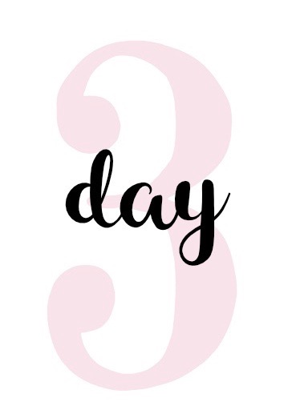

A WEEK WITHOUT DIGITAL TECHNOLOGY: JOURNAL
Ok, I don't know whose idea this was to shut the world of from technology, and I don't know if they thought this was a good idea or just some sort of "all this power has gone to my head - control game", but this is ridiculous! How am I ever going to get anything done??? Maybe there is a zombie apocalypse on the verge of taking over the world and word hasn't gotten out yet, and this is the "powers that be" way of slowing down the information flow. I know, I tend to be a little dramatic.... but seriously!?!?!?!? I repeat... how am I ever going to get anything done??? I need my laptop and my phone to do my homework, talk to my friends, and plan my day - my life! I'm getting hungry. I wonder what mom is making for dinner. I guess I will have to wait and see because SOMEBODY decided that people shouldn't text their MOTHERS. But, on the brighter side, there is electricity so I can use my computer to write my English paper and Physics Lab that is due on Friday.

I woke up this morning actually feeling a little panicked by the fact that I do not have cell phone service. My first instinct was to text my friends or my mom and complain. Breakfast was a little strange, too. Every morning, before school, my mom will make my dad, my brother and me breakfast, which she still did this morning. But, today, as we all sat at the table, it was actually a little awkward. My dad usually catches up on his Clash of Clans game before work - I always make fun of him and tell him he is obsessed with that game. He acted like it was no big deal that he couldn't play. But I knew he was secretly perturbed. My brother asked if he needed to wear a coat today, and naturally, my mom went for her phone to check the weather, but caught herself and told him to at least bring a light jacket just in case. School was also a little weird and some people were downright agitated all day long! Maybe this addiction to cell phones/technology you hear people talk about is actually a thing! But, on the brighter side, my physics teacher could not assign the 100+ problems that she always has us do when we start a new unit because the program with the problems is web based. I call that a win! Instead, we are doing more work from the actual textbook which, to be honest, is just fine with me!

I have an essay to write for English which requires me to show a relationship between the book we are reading in class and some other big event in history, so guess what that means: I have to actually go to the library, find some resources, read the information there and make copies on a copier. That's so weird to me! I haven't been to a public library in years. The last time I remember going to the library was for "story time" when I was a little kid. My friend and I decided we would go together since we are in the same class, so we had to plan the entire thing during lunch since we couldn't text each other later to confirm the plans. I have to admit, not being able to text has forced me to sit and think about what I need to do and how to plan my time more efficiently. I couldn't just say "I'll text you later". And it was more difficult to get in contact with my mom to let her know I would be home later without a cell phone. Luckily, my family is one of the few households that I know of that still has a home phone because my mom always insisted on having it using the reason "just in case". So I called my mom at work from the home phone to let her know that I would be at the library until 7:30. And honestly, I thought the library was going to be a horrible chore, but to my surprise, I had fun. I learned a lot more about the topics I was researching because I had to look through so many books and read about a bunch of different topics, and I got to spend quality time with my friend without the distraction of our cell phones.
I am feeling less tired in the morning. My mom says it's because I am not staying up late watching Netflix. I always argue that nightime is my only down time during the day and that it's my time to watch my favorite show "The Blacklist", which she would argue and say that is why I am so tired in the morning. I do feel more refreshed... maybe she's right? Huh... I'll keep this to myself for now. Today I saw my dad sitting at the table reading a newspaper which was very strange. I have never seen him read a newspaper, but the funny thing is, we get it delivered every day. It would sit on the counter for the day and then go into the recycle bin. My dad said that the news wasn't complete, and it was old news. He absolutely loves news and politics and I can tell that he really misses his news shows that he's always watching on his iPad. My mom also had to pull out her old cookbooks from the basement because she wanted to bake a cake for my cousin's birthday. Usually she just Googles a recipe and uses it. She and I spent some quality time looking through the cookbooks together. We also found some other interesting recipes that we thought we should try, and we also laughed at some recipes because there was actually a recipe on how to make scrambled eggs! Who doesn't know how to do that? Aside from no tecnology though, today was a pretty ordinary day.
Yay! I made it through the school week, and in hindsight, it wasn't THAT bad. I do feel like I got less homework this week, but my teachers swear that they did not let this lull of no digital technology affect the quality of our education. Mr. Smith, my history teacher, who is against too much digital technology because he says it is ruining young peoples' minds, gave a big speech about how we have more time on our hands because we are not wasting time on our "devices". That really made me reflect on this past week. Maybe there is some merit to what Mr. Smith was saying... if so, am I wasting a good portion of my life on what he calls "the nonsense of texting and social media"? I wonder how much time I actually spend on my devices... Nonetheless, I do miss my digital technology, and am anxiously waiting to have it back. I still feel disconnected from my friends and the world. But, on the brighter side, my mom was sooooo happy to see my brother laying on the couch reading a book. His usual Fortnite marathons have really taken a hit.
I made it! In less than an hour, I will have my cell phone, internet, and Netfilx back! Today, my mom took my brother and me to a new restaurant for lunch, but she had a really hard time getting there without her trusty GPS. My mom is horrible with directions, and what was even more frustrating for her was she couldn't pick up her cell phone and call my dad to ask for help. We had to pull into a gas station and ask the person working there if they knew how to get to the restaurant, and luckily, they did. My dad didn't come with us because he was trying to call his family overseas to check in on my grandparents. So, he had to go to the store to buy a calling card to use from our home phone. He usually uses an app on his phone which is free for phone calls overseas which is amazing since picking up our home phone and dialing direct costs over $4 per minute! This experience certainly had some pros, but in my opinion, the cons outweighed them.